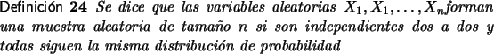
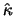
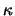

EstimadoresUn estimador  de un parámetro  de una variable aleatoria X es una variable aleatoria, que puede depender de una muestra aleatoria X1, X1,..., Xn.
Los dos estimadores más usuales son el promedio usual llamado
también media muestral y denotado por
Estos estimadores son a su vez variables aleatorias,
La desviación estándar muestral S es la raíz de la varianza.
Como sus nombres lo indican, se tiene que
El siguiente teorema, que en algunos textos [5] se llama teorema del límite central, es sumamente útil pues permite resolver diversos ejercicios de manera bastante simple.
Este teorema puede ampliarse de forma directa a la distribución
T = n Nuevamente, entre mayor sea el valor de n mejor será la aproximación. Hemos desarrollado una aplicación que nos permite simular el comportamiento de los promedios de las varianzas cuando se parte de una distribución con k valores cualesquiera y se estudia valores de n suficientemente grandes. El estudiante puede variar la distribución de probabilidad inicial así como los datos iniciales y la herramienta le muestra cual es la distribución de probabilidad de la variable promedio. El estudiante mediante exploración podrá validar los resultados que se han discutido previamente, en especial puede ver como a valores mayores de n la distribución de las medias se acerca más a una normal. En papel la aplicación es bastante simple, toma una distribución de probabilidad y un valor n que es el tamaño del muestreo. Calcula todas las combinaciones de X1, X2,..., Xn, hace los promedios, les calcula las probabilidades a cada uno y construye la distribución de probabilidad de los mismos, la cual se presenta en forma de tabla y en forma gráfica.
|